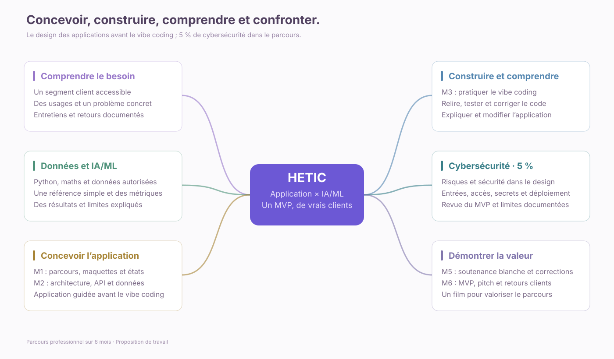
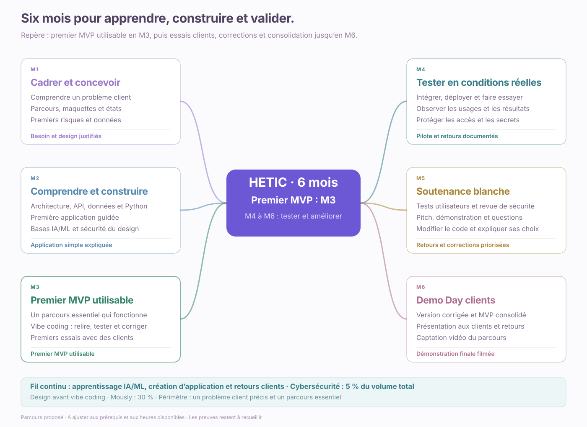
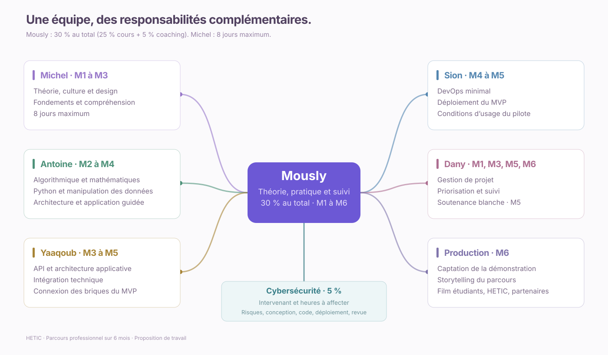

Cours les lundi, mardi, jeudi et vendredi ; mercredi FOAD de soutien sur plateforme. Les dates et affectations sont proposées, sans horaires ni durées inventés. Les jours fériés nationaux sont laissés libres ; les vacances HETIC restent à préciser. Rendez-vous clients : Brontis et Antoine. Télécharger le planning quotidien CSV ↓
HETIC · APPRENDRE PAR LE PROJET
Planning pédagogique HETIC
Six mois pour concevoir et créer une application, progresser en IA/ML et en cybersécurité, puis présenter un MVP à de vrais clients. Le design des applications précède la pratique du vibe coding.
6 moisDe l’idée à la démonstration
%Mously · théorie, pratique et suivi
%Cybersécurité dans le parcours
1 MVP / équipeÀ confronter à de vrais clients
Mously : 30 % du volume total (25 % théorie/pratique + 5 % coaching). Contenu cybersécurité : 5 % du volume total ; affectation des heures aux intervenants à préciser.
01 / LA TRAJECTOIRE
Un projet qui prend forme, mois après mois.
Parcours complet · M1 à M6
Aucune intervention sur cette période
Modifiez les filtres ou revenez au début du parcours.
Renseignez le début du parcours pour explorer les semaines et les dates. Les créneaux calculés restent proposés ; ils ne confirment aucune intervention.
M1Explorer le mois
Mously · Dany · Michel
Cadrage des projets
AU PROGRAMME
Besoins clients, gestion de projet, théorie du design des applications et introduction aux risques cyber. Théorie et pratique avec Mously.
COMPÉTENCE IA/ML · PROPOSÉE
Formuler un problème et identifier les données nécessaires. Expliquer dans quels cas l’IA est pertinente et définir une solution de référence simple.
CONCEVOIR ET CRÉER UNE APPLICATION
Décrire les utilisateurs et leurs tâches, dessiner un parcours et des maquettes, prévoir les états de l’interface. Justifier le design avant de générer du code.
CYBERSÉCURITÉ · 5 % DU PARCOURS
Identifier les données à protéger, les accès nécessaires et les risques principaux du projet.
PREUVE CLIENT · À RECUEILLIR
Rencontrer des personnes du segment visé. Documenter leur problème, leur pratique actuelle et les conditions d’un premier essai.
Jalon proposéUne fiche projet, un parcours utilisateur, des maquettes et une première carte des données et risques.
02 / ORGANISER LES INTERVENTIONS
Le plan de charge, en un regard.
Qui intervient, à quel moment, et sur quels blocs pédagogiques ?
—jours d’apprentissage distincts
—mobilisations · cours ou suivi FOAD
—intervenants, rôles ou collectifs
—Période la plus dense ·
Cours & ateliersCoachingProjet & clientsCybersécuritéDemo Day
Moins PlusUn atelier animé par deux intervenants apparaît sur leurs deux lignes, mais compte une seule fois dans les blocs distincts. Les vues de rythme comptent séparément les jours de cours et les suivis FOAD proposés, qui ne sont pas des journées de présence enseignante. Les vues de contenus conservent les blocs du programme. Les heures, disponibilités et taux d’occupation restent à définir. Cette vue couvre tout le parcours, indépendamment des filtres du calendrier.
DÉTAIL DES INTERVENTIONS
03 / LE FIL CONDUCTEUR
Deux progrès à rendre visibles.
OBJECTIF · SAVOIR CONCEVOIR ET CRÉER UNE APPLICATION
Comprendre le design avant le vibe coding.
- M1 · ConcevoirParcours, maquettes, états d’interface et risques.
- M2 · Comprendre et construireArchitecture, API, données et première application guidée.
- M3 · Pratiquer le vibe codingSpécifier, générer, relire, tester et corriger.
- M4–M6 · Déployer et défendreApplication utilisable, sécurité, soutenance et retours clients.
Cybersécurité : 5 % du volume total, de la conception à la revue du MVP. Chaque apprenant doit pouvoir expliquer son code et réaliser une modification ciblée.
APPRENDRE À FAIRE01
Une application et de l’IA/ML
que l’on sait expliquer.
Concevoir les écrans et les données, construire l’application, évaluer l’IA/ML et comprendre le code, y compris lorsqu’il est généré.
- Une application et un code reproductibles
- Une architecture expliquée et une IA/ML évaluée
- Une modification du code et des choix de sécurité justifiés
Faire fonctionner → reproduire → expliquer
VÉRIFIER SUR LE TERRAIN02
Un MVP qui répond
à un problème client réel.
Confronter le projet aux pratiques des clients dès le cadrage, puis observer l’usage avant la démonstration finale.
- Des besoins documentés auprès du segment visé
- Des essais sur des tâches concrètes
- Des retours datés et des améliorations justifiées
Écouter → faire essayer → mesurer → ajuster
Ces preuves sont des objectifs à documenter pendant le parcours. Une démonstration réussie ne suffit pas, à elle seule, à établir la maîtrise technique ou la validation commerciale.
04 / SE REPRÉSENTER LE PROJET
Les six mois, les étapes et les apprentissages.
COMPRENDRE · CONSTRUIRE · DÉFENDRE
Des bases solides avant le MVP.
Premier MVP visé en M3 après revue des bases ; le périmètre et le calendrier s’ajustent si les prérequis ne sont pas encore démontrés.
Équilibre théorie / pratique proposé
ThéoriePratiqueArgumentation · observations
LIVRABLE À DÉFENDRE
RÉPARTITION THÉMATIQUE · PROPOSITION À VALIDER
Quels domaines aborde-t-on ?
Part proposée du volume pédagogique total, avec un domaine principal par activité pour éviter les doubles comptes. La cybersécurité reste à 5 %. Cette répartition ne s’additionne pas aux 30 % d’intervention de Mously et ne mesure pas les acquis.
RYTHME, SOUTIEN ET ASYNCHRONISME
Mercredi : FOAD et cours de soutien.
—jours de cours prévus
—mercredis FOAD prévus
—activités plateforme proposées
Participation aux coursÀ renseigner
Parcours FOAD suivisÀ renseigner
Activités plateforme réaliséesÀ renseigner
Objectifs de soutien validésÀ renseigner
Cours de soutien, exercices corrigés, QCM/rappel actif et dépôt d’une preuve sur la plateforme. Le suivi FOAD mobilise un référent à ventiler en temps de retour ; il ne vaut pas une journée de cours synchrone. Les mesures sont renseignées ou déclarées, sans connexion automatique à une plateforme.
Ouvrir la plateforme de soutien ↗Les acquis se documentent, mois après mois.
Théorie observéeÀ évaluer
Pratique observéeÀ évaluer
Argumentation observéeÀ évaluer
Jalons validés avec preuve0/6Validation pédagogique renseignée
Suivi individuel : pourcentages calculés sur les critères effectivement évalués, avec leur couverture. « À évaluer » signifie qu’aucune observation n’est renseignée. Ce relevé ne représente pas un pourcentage de toutes les connaissances d’un étudiant.
Renseigner les observations et les preuves · M1
Relevé individuel conservé dans ce navigateur. Pour chaque critère, sélectionner seulement une nouvelle observation faite ce mois-ci ; les graphiques reprennent la dernière observation connue. Exporter le relevé pour le conserver ou le transmettre.
Les cartes de synthèse, à consulter ou télécharger.




05 / UN ACCOMPAGNEMENT COLLECTIF
La bonne expertise, au bon moment.
| INTERVENANT | RESPONSABILITÉ | PÉRIODE |
|---|---|---|
| MOMously Pilotage | Pilotage, théorie et pratique · 25 % cours + 5 % coaching (30 % au total) | M1 à M6 |
| MIMichel | Fondements IA/Data, design et analyse critique des propositions | M1 à M3 |
| ANAntoine | Bases Python/Data/apps et code assisté (M2–M4) ; rendez-vous clients avec Brontis (M1–M6) | M1 à M6 |
| YAYaaqoub | API et intégration | M3 à M5 |
| SISion | DevOps minimal, déploiement | M4 à M5 |
| DADany | Gestion de projet, découverte marché et argumentation | M1 à M3, M5 et M6 |
| BRBrontis | Rendez-vous clients et relation client, avec Antoine | M1 à M6 |
| CYCybersécurité À affecter | Risques, conception, code, déploiement et revue du MVP · 5 % du volume total | M1 à M5 |
| Société de production | Captation et storytelling | M6 |
Les périodes indiquent les fenêtres d’intervention ; le planning mensuel met en avant les intervenants principaux.
LE RENDEZ-VOUS FINAL · MOIS 6Demo Day.
Demo Day.
Le projet rencontre
son public.
Présenter un produit qui fonctionne, raconter les choix qui l’ont fait évoluer et écouter ceux à qui il est destiné.
Brontis · Antoine · Étudiants · Clients invités · ProductionLES LIVRABLES ATTENDUS
- 01
Un MVP fonctionnel par équipe
Une application complète, démontrable et explicable sur un cas concret.
- 02
Une démonstration devant les clients
Un pitch, le design, l’architecture et les choix IA/ML et de sécurité.
- 03
Des retours clients documentés
Des observations pour évaluer la pertinence du projet.
- 04
Un film pour valoriser le parcours
Les étudiants, HETIC et les partenaires mis en lumière.